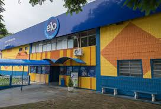

Eu acordei hoje e lembrei que tinha que ir a escola, eu vou ou não?
Sai de casa, mas ha 2 caminhos qual devo ir?
Dentro de casa eu lembrei que minha mãe ia chegar que devo fazer agora
eu fui a direita e reconheci o lugar
fui a esquerda e me deparei com muitos bandidos resto você ja sabe né?
eu fiquei o dia todo na cama, mas nada da minha mãe.
eu me escondi mais nada conteceu.
corri a escola mais o portão tava fechado o que fazer?
você procura em todo lugar mas nada da sua mãe.
pulei e finalmente cheguei a escola
voltei para casa mas vi monte de bandidos e decidir voltar

Dentro da escola você vai a diretoria e fica la junto com sua que ja estava la mãe
pulei e finalmente cheguei a escola